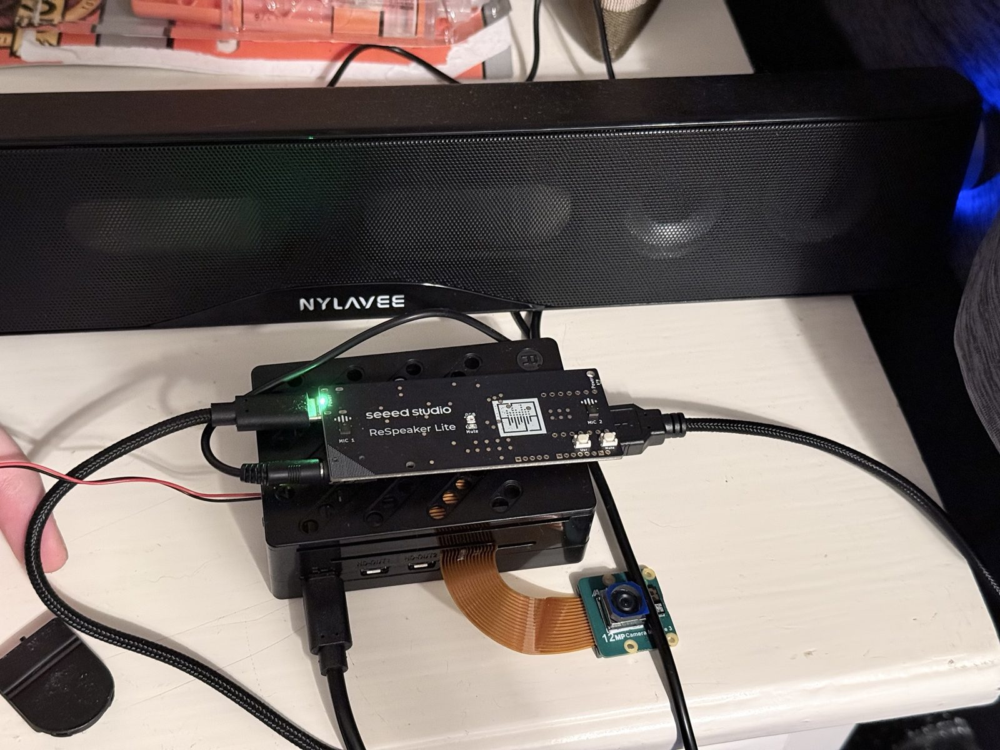
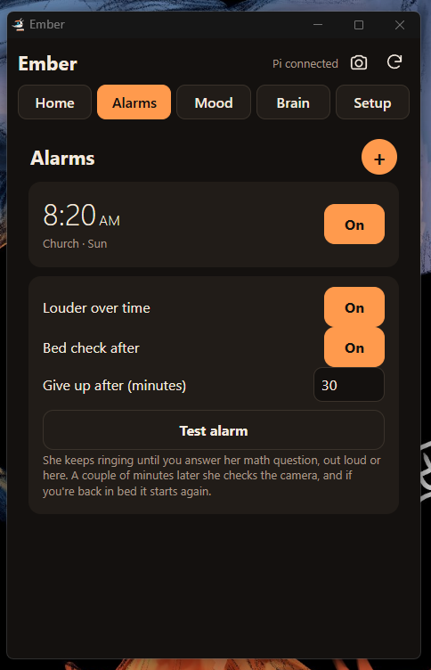
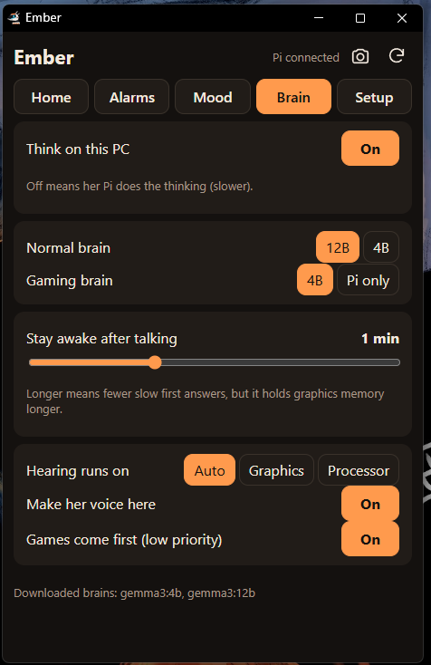

Ember: robot dragon room assistant
Working prototypePersonal project · Started Oct 2026
Ember is a desk companion built around a Raspberry Pi 5. She listens for her name, holds spoken conversations in a sarcastic dragon persona, and runs the room: wake-up alarms, timers, reminders, Spotify, a daily calendar and email brief, and a live camera feed. Her core features run on home hardware with no subscriptions or cloud accounts. A Windows companion app hands the heavy processing to my desktop graphics card when the PC is on, and the Pi takes over on its own when it is off.
What I built
- Speech recognition, a local language model and text-to-speech running entirely on home hardware (faster-whisper, llama.cpp with Gemma 3 on the Pi, Ollama with Gemma 3 12B on the PC, Piper).
- About 4,400 lines of Python across two apps: a Linux service with an HTTP API and phone web dashboard, and a Windows system-tray companion app.
- GPU offload over the local network that brings speech-to-text under 1 second, with automatic fallback to the Pi when the PC is off.
- Integrations with the Spotify Web API (OAuth 2.0 with PKCE), Gmail over IMAP, iCal calendars, weather data and ntfy push notifications.
- An audio pipeline: USB mic array with echo cancellation, wake-word detection, a robot voice effects chain (Piper + SoX), and a Spotify Connect speaker running as its own systemd service.
- A heavy-sleeper alarm that escalates in volume, needs a generated math problem solved to shut off, sends phone alerts, and uses the camera to check that I actually got out of bed.
- Headless Linux administration: SSH, systemd services, ALSA audio routing, NetworkManager Wi-Fi failover, camera setup and a real-time clock.
- Colorblind-safe status indicators that use patterns, blinking and blue/yellow instead of red/green.
In progress
- A 3D-printed robot dragon head with one flexible screen arcing cheek to cheek for her eyes, brows and mouth. The camera is the nose.
- A wooden shelf base that houses the Pi, amplifier and speakers, running from a single wall cord (12 V supply with 5 V buck converters).
- Speaker upgrade: ZK-TB21 2.1 amplifier with two Dayton Audio PC83-8 drivers in sealed chambers. PLA test pods are designed in CadQuery.
- An ESP32-S3 over USB to drive the face screen, servos and LEDs.
- Vision and security: Hailo-8L accelerator, Frigate motion detection, face recognition, 940 nm infrared night vision, and private remote access through Tailscale.
- Compute
- Raspberry Pi 5 (8 GB)
- Microphone
- ReSpeaker Lite 2-mic array
- Camera
- Camera Module 3 NoIR
- Helper
- Windows PC with GPU


